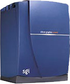
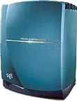
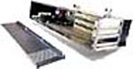
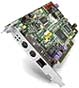
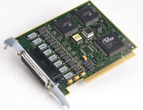
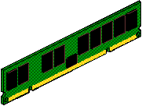
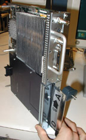
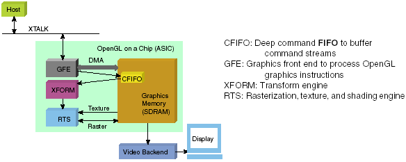
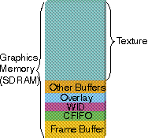
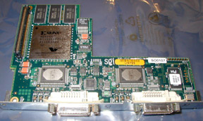

Operating Documentation
Direction 5114043-800, Rev# 9
LightSpeed 3.X Service Methods (Advanced)
Operating Documentation |
| NOTE: | This theory applies to both Octane and Octane2 Host Computers. |
The Host Computer used on the Global Console - Octane (a.k.a. "GOC1") is a Silicon Graphics Inc. (SGI) computer. Two versions of this computer can be used in this product: Octane or Octane2. Physically, they appear the same, except the Octane2 has blue covers (the original Octane has teal). Some key performance and service features include:
A “slide-out” System Module, which contains the CPU(s)/bricks
R12K Single or Dual (Direct-3D Option) brick processor
Peripheral Device Support through an integrated chassis.
PCI expansion bay for three 32 or 64-bit wide PCI devices
Three 3.5-inch Ultra SCSI drive bays
512MB’s (non-D3D) or 1.5GB (D3D) upgrade-able DIMM Memory
Powerful graphics subsystem that supports dual [head] monitors. Octane2 uses a V12 graphics XIO card/subsystem, with dual channel display (DCD) daughter card.
A Unique System ID module (NIC Chip) containing system Ethernet number (which gets imprinted on option MODs)
A slide-out Power Supply
Dual 9GB, high speed (10k rpm), Small Computer System Interface (SCSI) disk drives. Slide-out internal hard drives with slot dependent SCSI IDs. The bottom slot being assigned SCSI ID1, the one above SCSI ID2, and the top slot for SCSI ID3, if installed.
For additional information on Silicon Graphic’s Octane or Octane2 computer, visit the manufacturer’s web site at http://www.sgi.com.
Illustration 1: Octane2 Host Computer

Illustration 2: Octane (original) Host Computer

The Silicon Graphics Octane/Octane2 workstation is powered by the 64-bit MIPS R12000A processor, with out-of-order execution, large flexible caches, and superscalar design. It features:
R12KS-360 (single) or R12KS-400 (dual) MHz Processor(s)
4-way superscalar, 64-bit architecture
Out-of-order instruction execution
5 separate execution units
MIPS 4 instruction set
32KB two-way set-associative on-chip instruction cache
2MB fast L2 (secondary) cache
The host contains a Peripheral Component Interconnect (PCI) expansion chassis, which is connected to the main crossbar/crossbow bus within the Octane, and is capable of communicating at 266 MB per second. This bus is used to communicate with the Hospital’s Ethernet network using a 10/100BT second ethernet PCI card. In addition, the PCI chassis contains a SCSI and serial.
PCI card cage contains 3 PCI-64 slots (2 full-height and 1 half-height) for either PCI-32 or PCI-64 cards. This card cage is inserted into the back of the Octane system.
The host computer configures the devices in the card cage during boot-up. The IRIX operating system assigns and configures at boot-up those devices it recognizes. Support for devices is either built into the kernel (e.g., SCSI support) or added later as device drivers (software). Device drivers (e.g., Serial expander PCI card) are added and loaded outside of the kernel.
The SGI Part Number is PCI-CARDCAGE
Illustration 3: PCI Support Module

The fast ethernet adapter provides a second 10/100Base-T port for the host computer. It is a one-port card that auto-negotiates between Fast Ethernet and Ethernet. The card also provides half and full duplex and auto-negotiates between the two. The port supports Category 5 unshielded twisted pair (UTP) wiring via an RJ45 connector. In addition to providing the additional Fast Ethernet port, the card also has one mouse and keyboard port. The SGI Part Number is PCI-FE-TX-MK
Illustration 4: Fast Ethernet (100Base-TX) Adapter

This card fits into the PCI card cage. This single-ported card supports transfer rates up to 40Mb/S and can handle up to 6,000 I/Os per second, depending on system configuration and I/O transfer size. This PCI SCSI card supports active termination and has a 68-pin, high-density SCSI connector. The card is backward compatible with SCSI 1 and SCSI 2 devices. The SGI Part Number is PCI-SCSI-Q-SE-1P.
The Digi ClassicBoard is a high-performance 32 bit serial communications card. Manufactured by Digi International, it is available in multiple output port configurations. The card used in this product supports communication to 4 serial ports, through a DB78 connector. Internally, the board supports auto configuration of all PCI interrupts and speeds up to 460.8 Kbps. There are no user selectable jumpers or switches, and it occupies one slot in the host computer’s PCI card cage.
Illustration 5: Digi ClassicBoard Serial Port Expander Card

The board communicates electrically to the host (SGI) computer using the PCI bus. Software drivers designed for the board are loaded during OS/Apps installation and used to control and establish communications between hardware.
The Digi ClassicBoard is not manufactured for or distributed by SGI. For additional product information, visit Digi International’s WEB site at http://www.digi.com.
The Octane host computer uses Dual In-line Memory Module (DIMM) memory. Octane's system memory is made up of DIMMs that use synchronous DRAM (SDRAM) technology-the fastest memory currently available. Each DIMM fills one of two slots in a bank. Memory must always be added in increments of two. A non-direct 3D system has one (1) pair of DIMMs, totalling 512MB of memory installed. A system with direct 3D (dual processor) has 1.5 GB (1536MB) system memory and three (3) pairs of DIMMs installed. DIMMs must always be of the same type and density throughout the system module.
Illustration 6: DIMM Memory

The Octane2 graphics subsystem differs from that found in the original Octane. It features a a V12 graphics XIO card/subsystem, with dual channel display (DCD) daughter card.
Illustration 7: V12 Graphics Subsystem (w/o DCD card)

The VPro (V12) is a high performance XIO graphics subsystem. It contains two primary ASICs: one for transformation and rasterization, and another for back end -video that goes to the DACs. Utilizing a ASIC containing OpenGL; transformation, lighting, texturing, clipping, and the image pipeline management is handle efficiently. The OpenGL ASIC interfaces to the display back end chip via a dedicated onboard bus and to the rest of the system via a 16-bit 800MB-per-second bidirectional XTALK interface. See Illustration 8.
Illustration 8: VPro (V12) Block Diagram (shown w/o DCD card)

The graphics subsystem utilizes a large and highly configurable memory for display. All buffers, texture memory and CFIFO memory are allocated from a single large graphics memory pool, as shown in Illustration 9. Unlike the graphics subsystem used in Octane, texture memory is contained on the V12 graphics card. No additional texture memory card is required.
Illustration 9: VPro (V12) Graphic Memory Organization

Up to 128MB graphics memory including 104MB texture memory capacity.
Hardware acceleration of OpenGL® 1.2 core features and imaging extensions.
Hardware-accelerated specular shading.
Advanced texture management with asynchronous texture download capability.
48-bit (12-bit per component) RGBA.
96-bit hardware-accelerated accumulation buffer for depth of field, full-scene anti-aliasing, motion blurs, and other effects.
Perspective-correct textures and colors.
High-performance hardware clipping.
No user serviceable parts, jumpers or switches.
The Dual Channel Display (DCD) card is a daughter card that attaches to the V12 graphics card. With the DCD, the viewing area is expanded across two monitors. With the DCD installed, the left and right monitors are connected to it two output connectors. The output connector on the V12 is not connected/used when using the DCD card.
Illustration 10: Dual Channel Display (DCD) Card

The host contains three SCSI interfaces. Two of the interfaces are integrated into the computer’s main system boards and the other is an add-on card found in the PCI card cage. Together, these SCSI interfaces talk to devices both inside and outside the computer’s chassis.
The Hard disk drives internal to the computer’s chassis are driven by one of the integral SCSI controllers. Another integral SCSI controller talks to the external CD-ROM and MOD devices. The third controller, in the PCI card cage, talks any attached SCSI device (i.e, DASM).
Controller 0: -> SCSI card for SGI Internal Hard Disk Drives
Controller 1: -> SCSI card for CD-ROM and MOD
Controller 2: -> SCSI card for DASM
SCSI device IDs are position dependent inside the computer’s drive bay. Device ID zero (0) is assigned to the integral SCSI controller 0 itself. During boot, the computer attempts to boot the OS from SCSI device ID 1 on controller 0. SCSI device ID 1 is assigned to the drive in the lowest slot of the computer’s internal drive bay. Thus, it’s important to keep the internal disk oriented correctly. The boot drive must always be keep in the lowest slot.